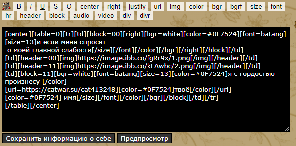

С чего всё начиналось?
Дети рождаются пустыми листами, белыми, как снег. Потом уже на этих листах формируются загибы, переломы, цветные пятна. Такой же была и я. Но это продолжалось недолго.
Я из такого типа детей, которые почти всё своё дошкольное время провели на улице. Помню, как однажды пришла к выводу о том, что основной показатель "взросления" у детей - это когда на ногах перестают появляться ссадины и ранки от активных прогулок во дворе.
Первые шаги в неизвестность
И всё же первое моё знакомство с компьютером произошло слишком рано. Мой отец однажды пришел с работы и обнаружил меня маленькую за компьютером, тыкающую в какую-то игрушку. А мне было 5 лет на тот момент. Отец очень резко отреагировал на данную ситуацию, подумал, что компьютер мне включила моя мама. Но нет. Всё то время, что отец работал за ПК маленькая Настя подсматривала, на какие кнопки нажимает папа, чтобы эта чудо-машина заработала. Яркие цвета экрана завораживали и я просто не могла пройти мимо.
BB-code как первый "язык программирования"
Да, моё первое знакомство с тегами и таким понятием как "программирование" пошло именно от bb-кодов. Тогда ими я оформляла свой блог и страницу "О себе". Вот так выглядело окно:

Уроки информатики давались мне легко, я быстрее всех выполняла задания и чаще всего скучала в конце уроков. В один день я поняла, что школы мне мало - мне нужны дополнительные курсы по программированию.
Так я поступила на курсы от Омского Государственного Университета им. Ф. М. Достоевского. Первый год был посвящен HTML, JS и основам CSS, второй полностью состоял из тем по языку программирования С#.

И сейчас я студентка 1 курса РГПУ им. А.И. Герцена ИИТиТО по направлению "Информатика и вычислительная техника".